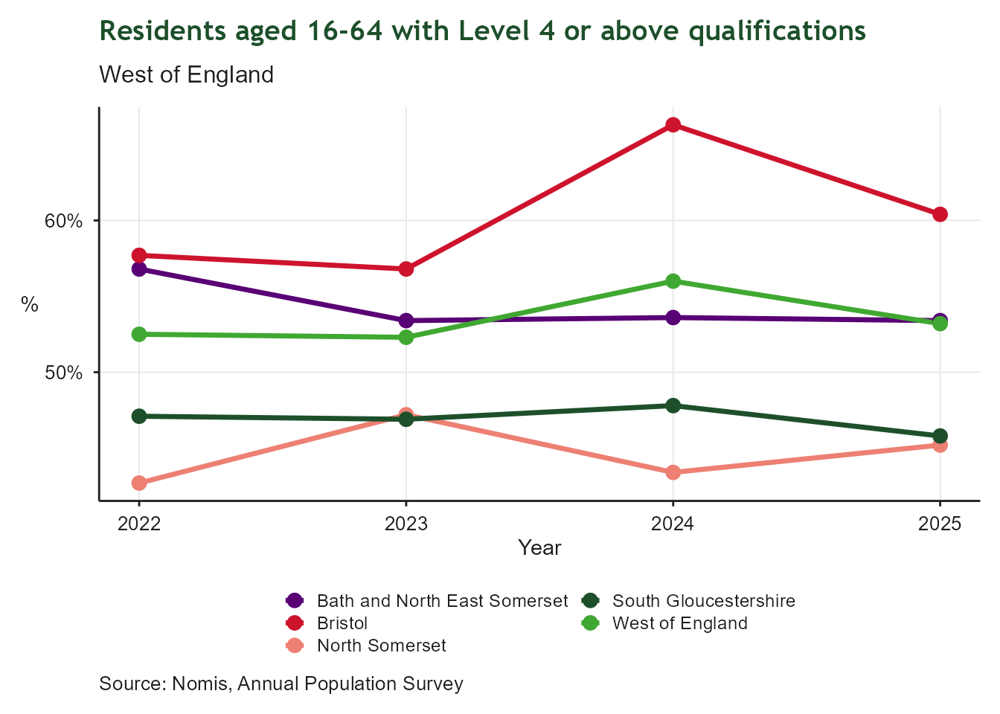
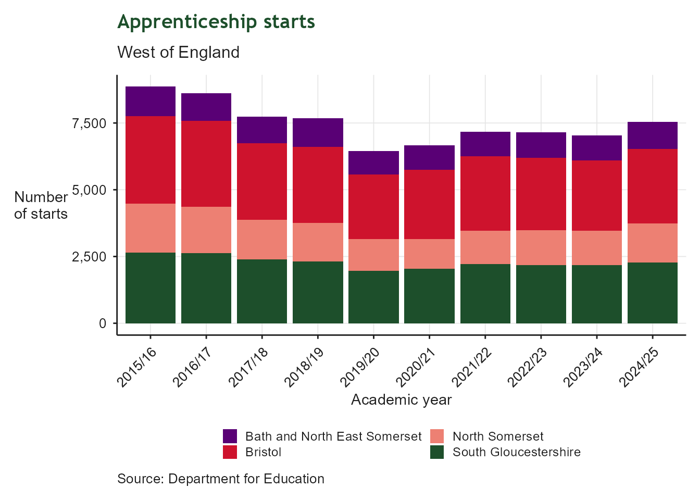
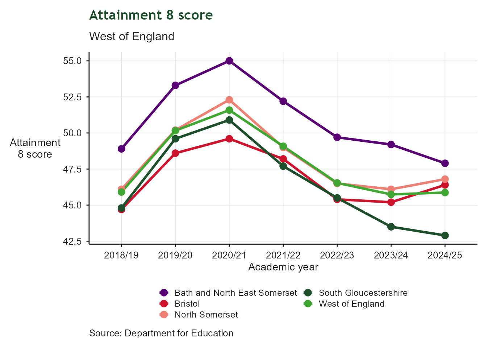
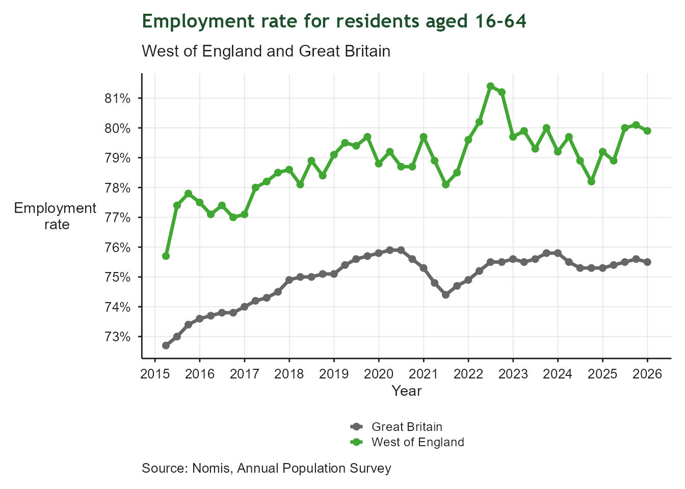
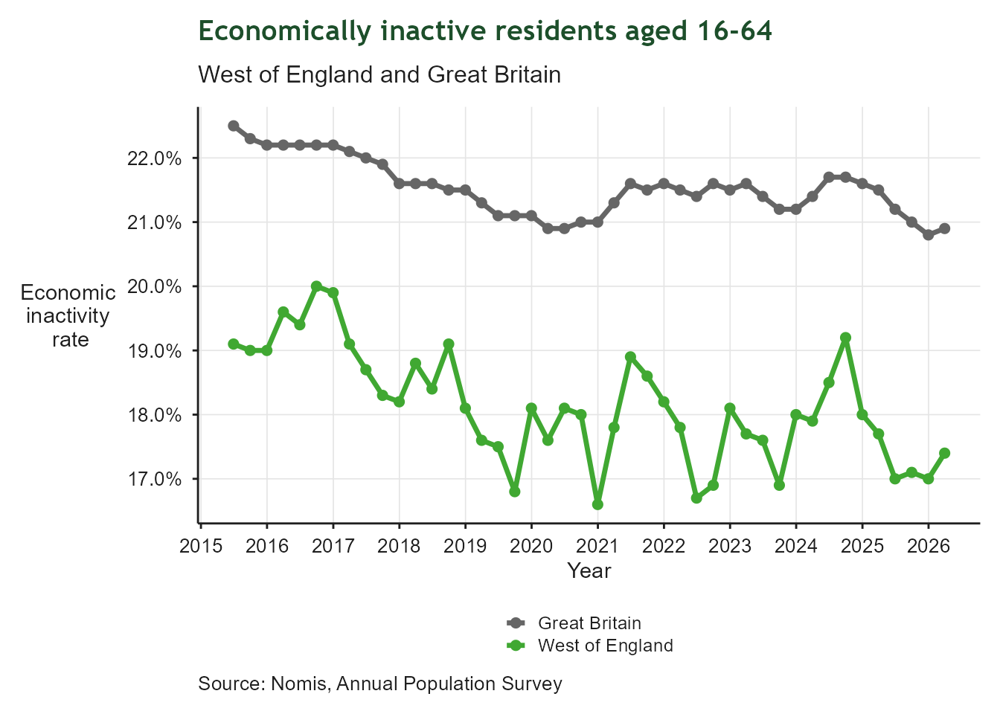

| Future-Ready Skills: Indicator Summary | ||||
| Indicator | From | To | Latest value | Units |
|---|---|---|---|---|
| Proportion of residents (aged 16-64) with no qualifications | 2025-01-01 | 2025-12-31 | 3.6 | Percentage |
| Proportion of residents (aged 16-64) with Level 4 or above qualifications | 2025-01-01 | 2025-12-31 | 53.2 | Percentage |
| Change in apprenticeship starts from the previous year | 2024-08-01 | 2025-07-31 | 7,540.0 | Percentage |
| Key Stage 4 attainment 8 data for all state funded schools, local authority maintained schools and academies | 2024-08-01 | 2025-07-31 | 45.9 | Score out of 100 (no unit) |
| Employment rate 16-64 year olds | 2025-01-01 | 2025-12-31 | 79.9 | Percentage |
| Proportion of residents aged 16-64 economically inactive | 2025-01-01 | 2025-12-31 | 17.0 | Percentage |
| Proportion of residents aged 16-17 not in employment, education or training (NEETs), inc not known | 2025-01-01 | 2025-12-31 | 6.3 | Percentage |
| Proportion of residents earning less than the Real Living Wage (as defined by the Living Wage Foundation) | 2025-01-01 | 2025-12-31 | 9.9 | Percentage |
5 Future-Ready Skills
Empowering residents with the skills to access the jobs that will shape our future
5.1 Context
This chapter tracks indicators related to skills development and training across the West of England. Indicators cover metrics like qualification levels, apprenticeships, adult learning participation, skills gaps, and employment outcomes. Indicators were developed to provide high-level insights into regional trends and performance in relation to the West of England’s skills priorities, which are informed by the Growth Strategy.
5.3 Residents with No Qualifications
| Residents with No Qualifications | |
| Working-age population with no formal qualifications | |
| Latest value | 3.6% (2025-12-31) |
| Previous value | 4.0% (2024-12-31) |
| Change vs previous | ↓ -0.4 ppt |
| First value | 5.3% (2022-12-31) |
| Change since first | ↓ -1.7 ppt |
| Observations | 4 |
| Trend | |
| Last updated | 2026-07-08 |
Overview
Qualifications are a key driver of employment, productivity and economic opportunity. This indicator measures the proportion of working-age residents with no formal qualifications. Lower levels indicate a more skilled workforce and greater access to employment opportunities. Reducing the number of residents without qualifications supports the West of England Growth Strategy’s ambition to equip people with the skills needed to access future jobs, improve productivity and ensure the benefits of economic growth are shared across communities.

5.4 Residents with Level 4+ Qualifications
| Residents with Level 4+ Qualifications | |
| Working-age population qualified to Level 4 and above | |
| Latest value | 53.2% (2025-12-31) |
| Previous value | 56.0% (2024-12-31) |
| Change vs previous | ↓ -2.8 ppt |
| First value | 52.5% (2022-12-31) |
| Change since first | ↑ +0.7 ppt |
| Observations | 4 |
| Trend | |
| Last updated | 2026-07-08 |
Overview
Higher-level qualifications are an important indicator of workforce capability and economic competitiveness. This indicator measures the proportion of working-age residents qualified to Level 4 and above. (Level 3 qualifications include A levels and equivalent qualifications, this indicator captures qualifications above this level). These include a range of higher education qualifications, from Higher National Certificates and Certificates of Higher Education through to bachelor’s degrees (Level 6) and postgraduate qualifications. Higher levels of attainment support innovation, productivity and growth in knowledge intensive sectors. The indicator reflects the region’s ability to develop and attract the talent needed to support future economic growth.

5.5 Apprenticeship Starts
| Apprenticeship Starts | |
| Apprenticeship starts across the region | |
| Latest value | 7,540.0 Starts (2025-07-31) |
| Previous value | 7,040.0 Starts (2024-07-31) |
| Change vs previous | ↑ +7.1% |
| First value | 8,860.0 Starts (2016-07-31) |
| Change since first | ↓ -14.9% |
| Observations | 10 |
| Trend | |
| Last updated | 2026-07-08 |
Overview
Apprenticeships provide an important route into skilled employment and career progression. This indicator measures participation in apprenticeship programmes across the region. Strong apprenticeship uptake helps employers develop the workforce they need while providing residents with opportunities to gain qualifications and practical experience.

5.6 KS4 Attainment 8
| KS4 Attainment 8 | |
| Average Attainment 8 score at Key Stage 4 | |
| Latest value | 45.9 Score (2025-07-31) |
| Previous value | 45.7 Score (2024-07-31) |
| Change vs previous | ↑ +0.3% |
| First value | 45.9 Score (2019-07-31) |
| Change since first | ↓ -0.1% |
| Observations | 7 |
| Trend | |
| Last updated | 2026-07-08 |
Overview
Educational attainment provides the foundation for future learning, skills development and employment opportunities. This indicator measures average pupil attainment across a range of subjects at the end of Key Stage 4 (GCSE). Strong educational outcomes help ensure young people are equipped to progress into further education, training and employment. Comparisons over time should be interpreted with some caution, as educational attainment and assessment arrangements were affected by the COVID-19 pandemic, particularly during 2020 and 2021.

5.7 Employment Rate 16-64
| Employment Rate 16-64 | |
| Proportion of working-age residents in employment | |
| Latest value | 79.9% (2025-12-31) |
| Previous value | 80.1% (2025-09-30) |
| Change vs previous | ↓ -0.2 ppt |
| First value | 75.7% (2015-03-31) |
| Change since first | ↑ +4.2 ppt |
| Observations | 44 |
| Trend | |
| Last updated | 2026-07-08 |
Overview
Employment is a key measure of economic participation and prosperity. This indicator measures the proportion of working-age residents who are in employment. Higher employment rates indicate that residents are benefiting from economic opportunities and contributing their skills within the labour market. Sustaining high employment levels is important for supporting inclusive growth and regional productivity.

5.8 Economic Inactivity
| Economic Inactivity | |
| Proportion of working-age residents economically inactive | |
| Latest value | 17.0% (2025-12-31) |
| Previous value | 17.1% (2025-09-30) |
| Change vs previous | ↓ -0.1 ppt |
| First value | 19.5% (2015-03-31) |
| Change since first | ↓ -2.5 ppt |
| Observations | 44 |
| Trend | |
| Last updated | 2026-07-08 |
Overview
Economic inactivity can limit workforce participation and reduce the availability of skills within the labour market. This indicator measures the proportion of working-age residents who are neither employed or actively seeking work. Lower levels of inactivity indicate greater participation in economic activity and access to employment opportunities. Reducing inactivity is an important part of addressing labour shortages and supporting inclusive growth.

5.9 NEET 16-17
| NEET 16-17 | |
| 16-17 year olds not in education, employment or training | |
| Latest value | 6.3% (2025-12-31) |
| Previous value | 6.7% (2024-12-31) |
| Change vs previous | ↓ -0.4 ppt |
| First value | 6.6% (2019-12-31) |
| Change since first | ↓ -0.3 ppt |
| Observations | 7 |
| Trend | |
| Last updated | 2026-07-08 |
Overview
Participation in education, employment or training during the transition from school is important for long-term outcomes. This indicator measures the proportion of 16-17 year olds who are not in education, employment or training (NEET). Lower rates indicate that more young people are progressing into positive destinations and developing the skills needed for future careers. Reducing NEET levels helps strengthen the future workforce and improve social mobility.

5.10 NEET 18-24
Please note: This indicator is currently under development and data is not yet available for reporting. Analysis will be included in a future update of the Regional Indicators report.
5.11 Below Living Wage
| Below Living Wage | |
| Proportion of employees earning below the Living Wage | |
| Latest value | 9.9% (2025-12-31) |
| Previous value | 10.6% (2024-12-31) |
| Change vs previous | ↓ -0.7 ppt |
| First value | 18.1% (2018-12-31) |
| Change since first | ↓ -8.2 ppt |
| Observations | 8 |
| Trend | |
| Last updated | 2026-07-08 |
Overview
The quality of employment is an important aspect of economic wellbeing. This indicator measures the proportion of employees earning below the Real Living Wage, as defined by the Living Wage Foundation. Lower levels indicate that a greater share of workers are earning wages that better reflect the cost of living. Monitoring this indicator helps assess whether economic growth is translating into improved living standards and the creation of quality employment opportunities. The most recent year of data is provisional and should be interpreted with caution, as revised estimates will be published the following year.

5.12 Claimant Count in Deprived Wards
Please note: This indicator is currently under development and data is not yet available for reporting. Analysis will be included in a future update of the Regional Indicators report.
5.13 Skills Gaps
Please note: This indicator is currently under development and data is not yet available for reporting. Analysis will be included in a future update of the Regional Indicators report.